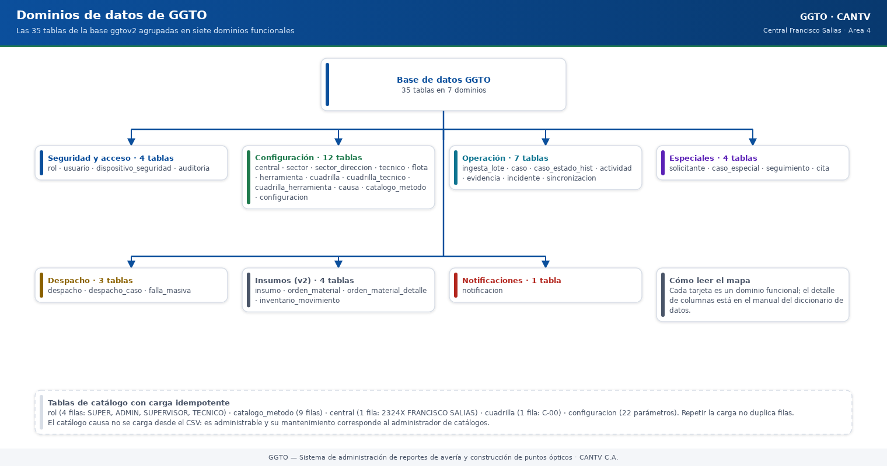
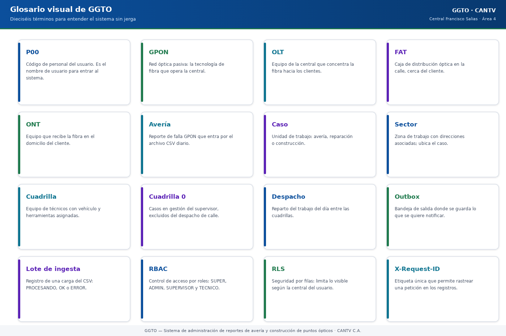

Sistema de administración de reportes de avería y construcción de puntos ópticos
Manual literal · Diccionario de DatosDiccionario de Datos — Entidades de la base GGTO
Este manual explica, con palabras sencillas, qué información guarda la base de datos del sistema GGTO y cómo se organiza. Es la versión literal del manual técnico: conserva el mismo orden de secciones, las mismas tablas y los mismos datos, pero sin tecnicismos. Cuando el código no permite confirmar algo, se indica como pendiente de confirmar.
Este manual explica, con palabras sencillas, qué información guarda la base de datos del sistema GGTO y cómo se organiza. Es la versión literal del manual técnico: conserva el mismo orden de secciones, las mismas tablas y los mismos datos, pero sin tecnicismos. Cuando el código no permite confirmar algo, se indica como pendiente de confirmar.
1Empezar en 5 minutos
- Entiende la idea general. La base de datos es como un archivador gigante.
Dentro tiene 36 «cajones» llamados tablas (por ejemplo,
caso,despachoocuadrilla). Cada tabla guarda un tipo de información distinto. La tabla número 36,cuadrilla_sector_dia, es la que guarda qué sectores atiende cada cuadrilla cada día (ciclo D-66). - Ubica el centro del sistema. Casi todo gira alrededor de la tabla
caso: allí se registra cada avería o solicitud de trabajo, con su dirección, teléfono y estado. Empieza por ahí para entender el resto. - Sigue el recorrido diario. El archivo CSV del día entra por
ingesta_lote, se convierte en casos (caso); el supervisor arma el despacho (despachoydespacho_caso) y la cuadrilla gestiona el trabajo (actividad,cita,seguimiento). - Revisa los catálogos.
rol,central,sector,tecnico,flota,herramienta,cuadrilla,causa,catalogo_metodoyconfiguracionson listas maestras: se configuran una vez y se consultan siempre. - Cuida los datos personales. La base guarda teléfonos, nombres, cédulas, direcciones y ubicaciones (datos personales o PII). Hay datos reales cargados (42 casos con datos personales) y el servicio es público: el acceso debe restringirse. Recuerda además que Telegram y correo todavía no tienen credenciales, así que los envíos quedan PENDIENTES; WhatsApp no existe en la v1; y la app móvil Flutter no está desarrollada (Ciclo 8 pospuesto).
2Visión general
Ficha de identificación del sistema y de la base que describe este manual:
| Dato | Valor |
|---|---|
| Proyecto | GGTO — Sistema de administración de reportes de avería y construcción de puntos ópticos |
| Cliente | CANTV C.A. — Central Francisco Salias (Área 4) |
| Motor de base de datos | PostgreSQL 15 (instancia compartida truekeate-main:southamerica-east1:truekeate-db-dev) |
| Base | ggtov2 · usuario de aplicación ggtov2_app |
| Script de creación (DDL) | RepoTecnico/db/schema.sql — 820 líneas y 36 tablas |
| Mapeo a objetos de Python (ORM) | app/models/*.py (SQLAlchemy 2.x declarativo) |
| Diccionario de origen | RepoTecnico/diccionario_datos.md (Borrador v0.2, «sujeto a validación») |
| Esquema de pruebas | La variable DB_SCHEMA agrega options=-csearch_path=<esquema>,public (en app/core/db.py) |
Antes de entrar en detalle, conviene fijar cuatro palabras que se repiten en todo el manual:
- Tabla: un cajón del archivador. Agrupa un mismo tipo de información, por
ejemplo todos los casos (
caso). - Campo: una columna de la tabla. Describe un dato concreto de cada registro,
por ejemplo
direccionotelefono. - Clave: una marca que identifica o conecta registros. La clave principal (PK) es el número único de cada fila; la clave foránea (FK) es un número que apunta a la clave principal de otra tabla y crea un enlace entre ambas.
- Relación: la conexión entre dos tablas. Por ejemplo, un caso puede tener
muchas citas (
caso→cita), y cada cita pertenece a un solo caso.
Las entidades se describen tal como están implementadas en el script de creación de la base y en los modelos de Python. Cuando el diccionario de origen y el script real difieren, la diferencia se señala en la sección Fuentes → Divergencias detectadas. Lo que no se pudo verificar se marca como «pendiente de confirmar».
2.1Las 36 tablas del esquema
El script de creación contiene 36 sentencias CREATE TABLE (conteo directo
sobre RepoTecnico/db/schema.sql). Se agrupan en siete dominios funcionales:
| Dominio | Tablas | Nº |
|---|---|---|
| Seguridad y acceso | rol, usuario, dispositivo_seguridad, auditoria |
4 |
| Configuración | central, sector, sector_direccion, tecnico, flota, herramienta, cuadrilla, cuadrilla_tecnico, cuadrilla_herramienta, causa, catalogo_metodo, configuracion |
12 |
| Operación | ingesta_lote, caso, caso_estado_hist, actividad, evidencia, incidente, sincronizacion |
7 |
| Especiales | solicitante, caso_especial, seguimiento, cita |
4 |
| Despacho | despacho, despacho_caso, cuadrilla_sector_dia, falla_masiva |
4 |
| Insumos (v2) | insumo, orden_material, orden_material_detalle, inventario_movimiento |
4 |
| Notificaciones | notificacion |
1 |
| Total | 36 |

Código del gráfico (Mermaid)
flowchart TB
BASE["Base de datos GGTO<br/>36 tablas en 7 dominios"]
BASE --> D1["Seguridad y acceso<br/>4 tablas"]
BASE --> D2["Configuración<br/>12 tablas"]
BASE --> D3["Operación<br/>7 tablas"]
BASE --> D4["Especiales<br/>4 tablas"]
BASE --> D5["Despacho<br/>4 tablas"]
BASE --> D6["Insumos (v2)<br/>4 tablas"]
BASE --> D7["Notificaciones<br/>1 tabla"]
D1 --> T1["rol · usuario · dispositivo_seguridad · auditoria"]
D2 --> T2["central · sector · sector_direccion · tecnico · flota · herramienta · cuadrilla · cuadrilla_tecnico · cuadrilla_herramienta · causa · catalogo_metodo · configuracion"]
D3 --> T3["ingesta_lote · caso · caso_estado_hist · actividad · evidencia · incidente · sincronizacion"]
D4 --> T4["solicitante · caso_especial · seguimiento · cita"]
D5 --> T5["despacho · despacho_caso · cuadrilla_sector_dia · falla_masiva"]
D6 --> T6["insumo · orden_material · orden_material_detalle · inventario_movimiento"]
D7 --> T7["notificacion"]Tablas de catálogo que se cargan con datos iniciales y que pueden ejecutarse
varias veces sin duplicar información (carga idempotente): rol (4 filas:
SUPER, ADMIN, SUPERVISOR, TECNICO), catalogo_metodo (9 filas), central
(1 fila: 2324X FRANCISCO SALIAS), cuadrilla (1 fila: C-00) y
configuracion (22 parámetros). El catálogo causa no se carga desde el
CSV: es administrable y su mantenimiento corresponde al administrador de
catálogos.
2.2Convenciones de nombres y tipos
Para leer las tablas de campos de este manual, usa esta clave:
| Marca | Significado en palabras sencillas |
|---|---|
PK |
Clave principal: identifica de forma única cada fila. |
FK |
Clave foránea: enlaza con la clave principal de otra tabla. |
UQ |
Único: no puede repetirse el valor. |
NN |
Obligatorio («no nulo»): el campo no puede quedar vacío. |
— |
Campo opcional o sin marca especial. |
Convenciones observadas en el script de la base:
| Convención | Regla | Ejemplo |
|---|---|---|
| Nombre de tabla | singular, en minúsculas y con guion bajo, sin prefijos | caso, sector_direccion |
| Clave principal | id_<entidad> |
id_caso, id_sector |
| Clave foránea | id_<entidad_referenciada> |
id_central, id_cuadrilla |
| Marcas de tiempo | sufijo _en o nombre explícito |
creado_en, asignada_en, fecha_hora |
| Banderas (sí/no) | tipo boolean con nombre afirmativo |
activo, activa, bloqueado, es_supervisor |
| Constantes de dominio | varchar(20) con lista cerrada CHECK, no ENUM |
estado_actual, tipo_caso |
| JSON | jsonb con valor inicial '{}' o '[]' |
rol.permisos, caso.ayudantes |
Correspondencia de tipos entre el script de la base, los modelos de Python y la notación de los diagramas Mermaid:
| PostgreSQL (script) | SQLAlchemy (modelos app/models/) |
Mermaid (diagramas) |
|---|---|---|
serial |
Integer, primary_key=True |
serial |
bigserial |
BigInteger, primary_key=True |
bigserial |
varchar(n) |
String(n) |
varchar |
text |
Text |
(no se dibuja) |
timestamptz |
DateTime(timezone=True) |
timestamp |
boolean |
Boolean |
bool |
jsonb |
JSONB (dialecto PostgreSQL) |
json |
numeric(12,2) |
(no usado en los modelos) | numeric |
inet |
(no usado en los modelos) | (no se dibuja) |

Código del gráfico (Mermaid)
flowchart LR
subgraph TABLA["TABLA = un cajón del archivador"]
FILA["FILA = un registro completo<br/>por ejemplo, un caso concreto"]
CAMPO["CAMPO = una columna<br/>por ejemplo, telefono o direccion"]
end
PK["CLAVE PRINCIPAL (PK)<br/>número único de cada fila<br/>ejemplo: id_caso"]
FK["CLAVE FORÁNEA (FK)<br/>apunta a la clave de otra tabla<br/>ejemplo: caso.id_sector"]
REL["RELACIÓN<br/>un caso puede tener muchas citas<br/>y cada cita pertenece a un caso"]
TABLA --> PK
TABLA --> FK
FK --> RELNotas de tipado verificadas:
- Los identificadores de tablas grandes (
caso,ingesta_lote,despacho, …) usanbigserial(números largos). Los catálogos pequeños (central,tecnico,sector) usanserial. actividad.latitud/longitudyevidencia.latitud/longitudusannumeric(10,7): precisión GPS de unos 1 cm.auditoria.ipes del tipo PostgreSQLinet(dirección de red), novarchar.dispositivo_seguridad.palabras_hashesjsonbcon valor inicial'[]'; el modelo de Python lo expone como una lista.- Los modelos de Python mapean 29 de las 36 tablas. Las siete tablas
restantes (
actividad,evidencia,incidente,sincronizacion,insumo,orden_material_detalle,inventario_movimiento) no tienen clase propia y solo existen en el script de la base (ver Fuentes → Cobertura del ORM). La tablaauditoriasí tiene modelo desde el ciclo D-67.
2.3Campos de auditoría (creado_en, actualizado_en)
Todas las tablas relevantes registran su creación con
creado_en timestamptz NOT NULL DEFAULT now() (fecha y hora automática).
Quince tablas añaden además actualizado_en:
| Tabla | Tiene actualizado_en |
Disparador automático |
|---|---|---|
central |
Sí | Sí |
sector |
Sí | Sí |
tecnico |
Sí | Sí |
usuario |
Sí | Sí |
flota |
Sí | Sí |
herramienta |
Sí | Sí |
cuadrilla |
Sí | Sí |
caso |
Sí | Sí |
caso_especial |
Sí | Sí |
despacho |
Sí | Sí |
falla_masiva |
Sí | Sí |
insumo |
Sí | Sí |
orden_material |
Sí | Sí |
configuracion |
Sí | Sí |
dispositivo_seguridad |
Sí | No (no está en la lista de disparadores) |
La función set_actualizado_en() pone NEW.actualizado_en := now() en cada
UPDATE. Luego, un bloque DO crea un disparador
BEFORE UPDATE ... FOR EACH ROW sobre las 14 tablas editables. La tabla
dispositivo_seguridad declara la columna actualizado_en pero no aparece
en esa lista, por lo que su marca de actualización no se refresca
automáticamente: se recomienda confirmar si es intencional o añadirla a la
lista. Las tablas transaccionales (caso_estado_hist, actividad, evidencia,
cita, seguimiento, notificacion, auditoria) solo reciben inserciones y
no llevan actualizado_en.
2.4Extensiones pgcrypto/pg_trgm
El script de la base crea dos extensiones al inicio de la transacción:
| Extensión | Para qué se usa | Versión |
|---|---|---|
pgcrypto |
Generar identificadores aleatorios (gen_random_uuid()) y huellas digitales (digest()) |
1.3 (verificado en la instancia) |
pg_trgm |
Búsqueda difusa por dirección para asignar el sector (RF-23 / D-33), con índices GIN gin_trgm_ops |
1.6 (verificado en la instancia) |
Como las extensiones viven en el esquema public, la cadena de conexión
conserva ese esquema en el search_path cuando se usa DB_SCHEMA:
options=-csearch_path=<esquema>,public. Esto permite que los esquemas
aislados de prueba encuentren gin_trgm_ops y las funciones de pgcrypto sin
reinstalar las extensiones. Las versiones exactas de las extensiones no están
fijadas en el repositorio: pendiente de confirmar en cada entorno si se
requiere una coincidencia estricta.
3Entidades por dominio
3.1Seguridad y acceso
3.1.1rol — catálogo de roles
Para qué sirve: es la lista de roles del sistema, con su bolsa de permisos
guardada en formato JSON (jsonb).
| Campo | Tipo | Clave / Nulo | Para qué sirve |
|---|---|---|---|
id_rol |
serial |
PK, NN | Identificador del rol. |
codigo |
varchar(30) |
UQ, NN | SUPER, ADMIN, SUPERVISOR, TECNICO. |
nombre |
varchar(80) |
NN | Nombre visible. |
descripcion |
text |
— | Alcance funcional resumido. |
permisos |
jsonb |
NN, '{}' |
Permisos adicionales. El rol SUPER no depende de esta bolsa, porque el sistema le concede permiso total. |
activo |
boolean |
NN, true |
Rol habilitado. |
creado_en |
timestamptz |
NN, now() |
Fecha y hora de creación. |
3.1.2usuario — credenciales de acceso
Para qué sirve: guarda las cuentas de acceso, con login por P00, clave
cifrada (hash) y alcance por central.
| Campo | Tipo | Clave / Nulo | Para qué sirve |
|---|---|---|---|
id_usuario |
serial |
PK, NN | Identificador. |
p00 |
varchar(20) |
UQ, NN | Identificador laboral; se usa como login y como identidad dentro del token de sesión (JWT). |
correo |
varchar(120) |
UQ | Correo del usuario. |
clave_hash |
varchar(255) |
NN | Clave cifrada con Argon2id. |
id_rol |
integer |
FK→rol, NN |
Rol asignado. |
id_tecnico |
integer |
FK→tecnico |
Vínculo con el trabajador (opcional). |
id_central |
integer |
FK→central |
Alcance por central (D-36); refuerza el aislamiento de datos. |
intentos_fallidos |
smallint |
NN, 0 |
Bloqueo a los 3 intentos. |
bloqueado |
boolean |
NN, false |
Cuenta bloqueada por intentos fallidos. |
bloqueo_cliente |
boolean |
NN, false |
Bandera prevista para ocultar datos del cliente (RNF-05). |
requiere_cambio_clave |
boolean |
NN, false |
Fuerza el cambio de clave. |
activo |
boolean |
NN, true |
Cuenta habilitada. |
ultimo_acceso |
timestamptz |
— | Último ingreso exitoso. |
creado_en / actualizado_en |
timestamptz |
NN | Fechas de creación y actualización. |
3.1.3dispositivo_seguridad — recuperación y documento cifrado
Para qué sirve: guarda las 12 palabras de recuperación y el documento cifrado de cada usuario.
| Campo | Tipo | Clave / Nulo | Para qué sirve |
|---|---|---|---|
id_dispositivo |
bigserial |
PK, NN | Identificador. |
p00 |
varchar(20) |
UQ, NN, FK→usuario.p00 con borrado en cascada |
Usuario propietario. |
palabras_hash |
jsonb |
NN, '[]' |
Huellas (hashes) de las 12 palabras. |
clave_privada_ref |
varchar(255) |
— | Referencia al secreto de la clave privada (no la clave). |
documento_cifrado |
text |
— | Documento de recuperación cifrado. |
bloqueado |
boolean |
NN, false |
Dispositivo bloqueado. |
version |
integer |
NN, 1 |
Versión del documento. |
actualizado_en |
timestamptz |
NN | Sin disparador automático (ver hallazgo anterior). |
3.1.4auditoria — bitácora de acciones
Para qué sirve: es el libro de acciones del sistema, con el estado anterior y
posterior de cada cambio, guardado en formato JSON (jsonb). Desde el ciclo
D-67 sí tiene modelo de Python (Auditoria, en app/models/entities.py).
| Campo | Tipo | Clave / Nulo | Para qué sirve |
|---|---|---|---|
id_auditoria |
bigserial |
PK, NN | Identificador. |
usuario |
varchar(20) |
— | P00 que ejecutó la acción. |
accion |
varchar(60) |
NN | Acción registrada. |
entidad |
varchar(60) |
— | Tabla o entidad afectada. |
id_entidad |
varchar(40) |
— | Identificador del registro afectado. |
datos_antes |
jsonb |
— | Estado previo. |
datos_despues |
jsonb |
— | Estado posterior. |
ip |
inet |
— | Dirección de origen. |
fecha_hora |
timestamptz |
NN, now() |
Momento del evento. |
Índice de apoyo: ix_auditoria_fecha sobre auditoria (fecha_hora).
Quién escribe en esta tabla (D-67). El ciclo D-67 conectó la bitácora con dos acciones del alta y la recuperación de técnicos:
| Acción registrada | Cuándo ocurre | Qué guarda |
|---|---|---|
ALTA_PRIMER_ACCESO |
El técnico crea su cuenta desde «Primer acceso (obtener clave)» | El P00, el correo y la versión de las palabras |
REGENERAR_PALABRAS |
El Super Usuario genera un juego nuevo desde el botón «Palabras» | Quién lo pidió, para qué P00, la versión anterior y la nueva |
Nota de fidelidad: el modelo
Auditoriadel programa no mapea la columnaip. En la regeneración, la dirección de origen se guarda dentro dedatos_antes(con el nombreip_solicitante), no en la columnaip. Que la columna física quede sin usar queda pendiente de confirmar como decisión de diseño.
3.2Configuración
3.2.1central — dirección operativa
Para qué sirve: es la base del filtro de ingesta. La central cargada es 2324X
FRANCISCO SALIAS.
| Campo | Tipo | Clave / Nulo | Para qué sirve |
|---|---|---|---|
id_central |
serial |
PK, NN | Identificador. |
region |
varchar(80) |
NN | Ejemplo: CAPITAL. |
estado_geografico |
varchar(80) |
NN | Ejemplo: BOLIVARIANO MIRANDA. |
capital_estado |
varchar(80) |
— | Ejemplo: LOS TEQUES. |
municipio |
varchar(80) |
NN | Ejemplo: BARUTA. |
parroquia |
varchar(80) |
NN | Ejemplo: BARUTA. |
estado_operativo |
varchar(80) |
— | Ejemplo: MIRANDA-2. |
distrito |
varchar(40) |
— | Ejemplo: 10204. |
area |
varchar(20) |
NN | Ejemplo: AREA 4. |
codigo_central |
varchar(20) |
UQ, NN | Ejemplo: 2324X; base para generar identificadores de avería. |
nombre_central |
varchar(120) |
NN | Ejemplo: FRANCISCO SALIAS. |
activa |
boolean |
NN, true |
Central operativa. |
creado_en / actualizado_en |
timestamptz |
NN | Fechas de creación y actualización. |
3.2.2sector — agrupación geográfica de trabajo
Para qué sirve: son los sectores que define el supervisor (Norte 1, Sur 2…) para armar rutas y despachos.
| Campo | Tipo | Clave / Nulo | Para qué sirve |
|---|---|---|---|
id_sector |
serial |
PK, NN | Identificador. |
id_central |
integer |
FK→central con borrado en cascada, NN |
Central propietaria. |
nombre |
varchar(120) |
NN | Nombre visible. |
codigo |
varchar(20) |
NN | Código corto. |
descripcion |
text |
— | Notas del supervisor. |
prioridad |
smallint |
NN, 100 |
Orden de atención. |
activo |
boolean |
NN, true |
Sector vigente. |
creado_en / actualizado_en |
timestamptz |
NN | Fechas de creación y actualización. |
Restricción única compuesta: UNIQUE (id_central, codigo) (el código no se
repite dentro de la misma central).
3.2.3sector_direccion — patrones de dirección del sector
Para qué sirve: guarda alias o patrones de dirección que pertenecen a un sector. Es la base para asignar el sector comparando texto.
| Campo | Tipo | Clave / Nulo | Para qué sirve |
|---|---|---|---|
id_sector_direccion |
serial |
PK, NN | Identificador. |
id_sector |
integer |
FK→sector con borrado en cascada, NN |
Sector destino. |
patron |
varchar(160) |
NN | Texto que se busca dentro de la dirección del caso. |
tipo_coincidencia |
varchar(20) |
NN, CONTIENE |
CONTIENE, EXACTO o REGEX. |
normalizar |
boolean |
NN, true |
Quita acentos y mayúsculas antes de comparar. |
activo |
boolean |
NN, true |
Patrón vigente. |
creado_en |
timestamptz |
NN | Fecha de creación. |
Restricción UNIQUE (id_sector, patron) e índice trigram
ix_sector_patron_trgm.
3.2.4tecnico — trabajador de la central
Para qué sirve: guarda los datos del personal técnico.
| Campo | Tipo | Clave / Nulo | Para qué sirve |
|---|---|---|---|
id_tecnico |
serial |
PK, NN | Identificador. |
id_central |
integer |
FK→central, NN |
Central que lo emplea. |
nombre |
varchar(80) |
NN | Nombre. |
apellido |
varchar(80) |
— | Apellido. |
cedula |
varchar(20) |
UQ | Cédula. |
p00 |
varchar(20) |
UQ, NN | Identificador laboral. |
telefono |
varchar(30) |
— | Contacto (dato personal). |
correo |
varchar(120) |
— | Correo (dato personal). |
especialidad |
varchar(80) |
— | Especialidad. |
status |
varchar(20) |
NN, ACTIVO |
ACTIVO, INACTIVO, VACACIONES o SUSPENDIDO. |
creado_en / actualizado_en |
timestamptz |
NN | Fechas de creación y actualización. |
3.2.5flota — vehículos de la central
Para qué sirve: es el parque automotor que puede asignarse a las cuadrillas.
| Campo | Tipo | Clave / Nulo | Para qué sirve |
|---|---|---|---|
id_flota |
serial |
PK, NN | Identificador. |
id_central |
integer |
FK→central, NN |
Central propietaria. |
can |
varchar(20) |
UQ, NN | Código CAN. |
tipo / marca / modelo |
varchar(40) |
— | Características del vehículo. |
placa |
varchar(20) |
UQ | Placa. |
combustible |
varchar(20) |
— | Tipo de combustible. |
status |
varchar(20) |
NN, DISPONIBLE |
DISPONIBLE, EN_RUTA, MANTENIMIENTO o FUERA_SERVICIO. |
estado_cauchos / estado_fluidos / estado_general |
varchar(30) |
— | Chequeo operativo. |
creado_en / actualizado_en |
timestamptz |
NN | Fechas de creación y actualización. |
3.2.6herramienta — inventario de herramientas
Para qué sirve: lista las herramientas que pueden asignarse a las cuadrillas.
| Campo | Tipo | Clave / Nulo | Para qué sirve |
|---|---|---|---|
id_herramienta |
serial |
PK, NN | Identificador. |
id_central |
integer |
FK→central, NN |
Central propietaria. |
nombre |
varchar(120) |
NN | Nombre. |
codigo |
varchar(40) |
UQ, NN | Código de inventario. |
estado |
varchar(20) |
NN, DISPONIBLE |
DISPONIBLE, ASIGNADA, AVERIADA o PERDIDA. |
observacion |
text |
— | Notas. |
creado_en / actualizado_en |
timestamptz |
NN | Fechas de creación y actualización. |
3.2.7cuadrilla — equipo de trabajo
Para qué sirve: una cuadrilla es el equipo formado por técnicos, flota y herramientas. La cuadrilla del supervisor es la «cuadrilla 0».
| Campo | Tipo | Clave / Nulo | Para qué sirve |
|---|---|---|---|
id_cuadrilla |
serial |
PK, NN | Identificador. |
id_central |
integer |
FK→central, NN |
Central que la organiza. |
codigo |
varchar(20) |
NN | Código corto (ejemplo: C-00). |
nombre |
varchar(80) |
NN | Nombre. |
id_flota |
integer |
FK→flota |
Vehículo asignado. |
es_supervisor |
boolean |
NN, false |
Marca la cuadrilla 0. |
activa |
boolean |
NN, true |
Cuadrilla vigente. |
creado_en / actualizado_en |
timestamptz |
NN | Fechas de creación y actualización. |
Restricciones: UNIQUE (id_central, codigo) e índice único parcial
ux_cuadrilla_supervisor sobre cuadrilla (id_central) WHERE es_supervisor,
que garantiza una sola cuadrilla 0 por central.
3.2.8cuadrilla_tecnico — pertenencia N:M con vigencia
Para qué sirve: registra qué técnicos integran cada cuadrilla, con su rol y el rango de fechas en que pertenecieron.
| Campo | Tipo | Clave / Nulo | Para qué sirve |
|---|---|---|---|
id_cuadrilla |
integer |
PK, FK→cuadrilla con borrado en cascada, NN |
Cuadrilla. |
id_tecnico |
integer |
PK, FK→tecnico con borrado en cascada, NN |
Técnico. |
desde |
date |
PK, NN, CURRENT_DATE |
Inicio de la pertenencia. |
rol_cuadrilla |
varchar(30) |
NN, REPARADOR_PRINCIPAL |
REPARADOR_PRINCIPAL, AYUDANTE o SUPERVISOR. |
hasta |
date |
— | Fin de la pertenencia (vacío = vigente). |
Clave principal compuesta: (id_cuadrilla, id_tecnico, desde).
3.2.9cuadrilla_herramienta — asignación de herramientas
Para qué sirve: lleva el historial de entrega y devolución de herramientas a cada cuadrilla.
| Campo | Tipo | Clave / Nulo | Para qué sirve |
|---|---|---|---|
id_cuadrilla |
integer |
PK, FK→cuadrilla con borrado en cascada, NN |
Cuadrilla. |
id_herramienta |
integer |
PK, FK→herramienta con borrado en cascada, NN |
Herramienta. |
asignada_en |
timestamptz |
PK, NN, now() |
Momento de la asignación. |
devuelta_en |
timestamptz |
— | Momento de la devolución. |
Clave principal compuesta: (id_cuadrilla, id_herramienta, asignada_en).
3.2.10causa — catálogo de causas
Para qué sirve: es el catálogo administrable de causas (código y subcódigo), que usan los casos y las actividades.
| Campo | Tipo | Clave / Nulo | Para qué sirve |
|---|---|---|---|
id_causa |
serial |
PK, NN | Identificador. |
codigo_causa |
varchar(20) |
NN | Código principal. |
subcodigo_causa |
varchar(20) |
NN, '' |
Subcódigo (vacío si no aplica). |
descripcion |
varchar(255) |
— | Descripción del código. |
descripcion_subcodigo |
varchar(255) |
— | Descripción del subcódigo. |
tipo |
varchar(20) |
— | Clasificación libre. |
activo |
boolean |
NN, true |
Causa vigente. |
creado_en |
timestamptz |
NN | Fecha de creación. |
Restricción UNIQUE (codigo_causa, subcodigo_causa). Semilla actual: 0
causas (el catálogo se administra, no se carga del CSV).
3.2.11catalogo_metodo — métodos de cierre/enrutado/contacto
Para qué sirve: normaliza los métodos que usan las actividades.
| Campo | Tipo | Clave / Nulo | Para qué sirve |
|---|---|---|---|
id_metodo |
serial |
PK, NN | Identificador. |
dominio |
varchar(20) |
NN | CIERRE, ENRUTE, DIFERIDO o CONTACTO. |
codigo |
varchar(30) |
NN | Código (ejemplo: IVR, COS, SACAS). |
nombre |
varchar(120) |
NN | Nombre visible. |
activo |
boolean |
NN, true |
Método vigente. |
Restricción UNIQUE (dominio, codigo); semilla de 9 métodos.
3.2.12configuracion — parámetros del sistema
Para qué sirve: guarda los parámetros configurables del sistema en formato JSON.
| Campo | Tipo | Clave / Nulo | Para qué sirve |
|---|---|---|---|
clave |
varchar(80) |
PK, NN | Nombre del parámetro (ejemplo: fallas.umbral_casos). |
valor |
jsonb |
NN | Valor guardado en JSON. |
descripcion |
text |
— | Explicación del parámetro. |
actualizado_en |
timestamptz |
NN, now() |
Se refresca por disparador. |
Los parámetros relacionados con secretos solo se nombran, nunca se transcriben:
telegram.webhook_secret y mcp.api_key se cargan vacíos. El resto de claves
(ingesta.*, despacho.*, fallas.*, outbox.max_intentos, seguridad.*)
está en el script de la base.
3.3Operación
3.3.1ingesta_lote — carga del CSV diario
Para qué sirve: guarda la cabecera y las métricas de cada carga del archivo
detalle_averias_gpon_*.csv.
| Campo | Tipo | Clave / Nulo | Para qué sirve |
|---|---|---|---|
id_lote |
bigserial |
PK, NN | Identificador del lote. |
archivo |
varchar(255) |
NN | Nombre del archivo cargado. |
fecha_archivo |
date |
— | Fecha declarada del archivo (en los modelos de Python se mapea como fecha y hora; ver divergencias). |
id_central |
integer |
FK→central |
Central del lote. |
filas_leidas / filas_central |
integer |
NN, 0 |
Filas totales y filas de la central. |
casos_nuevos / casos_duplicados / casos_descartados |
integer |
NN, 0 |
Resultado de descartar repetidos por id_averia. |
estado |
varchar(20) |
NN, PROCESANDO |
PROCESANDO, OK o ERROR. |
detalle_error |
text |
— | Mensaje de error del lote. |
usuario |
varchar(20) |
— | P00 que ejecutó la carga. |
creado_en |
timestamptz |
NN | Fecha de creación. |
3.3.2caso — entidad central de averías
Para qué sirve: es la tabla central del sistema. Guarda cada avería del archivo
CSV (80 columnas depuradas) más los campos propios del sistema. La detección de
duplicados se apoya en id_averia.
| Grupo | Campos (tipo) | Nulo | Para qué sirve |
|---|---|---|---|
| Identidad | id_caso (bigserial PK), id_central (FK, NN) |
— | Identificador interno y central propietaria. |
| Clasificación | id_averia varchar(30) UQ NN; origen NN INGESTA_CSV; tipo_caso NN AVERIA; categoria NN RESIDENCIAL |
Solo id_averia, origen, tipo_caso y categoria son obligatorios |
Listas cerradas: origen INGESTA_CSV/MANUAL/TELEGRAM/MCP_IA; tipo AVERIA/REPARACION/CONSTRUCCION; categoría RESIDENCIAL/EMPRESA/REFERIDO/GOBIERNO. |
| Estado | estado_actual varchar(20) NN NUEVO |
NN | NUEVO, ASIGNADO, CONTACTADO, CITADO, DIFERIDO, EN_GESTION, ENRUTADO, CERRADO o CANCELADO. |
| Enlaces | id_sector FK, id_causa FK, id_lote_ingesta FK |
Sí | Sector, causa y lote de origen. |
| Banderas | en_gestion_supervisor NN false, es_falla_masiva NN false, creado_por FK→usuario.p00 |
creado_por sí |
Gestión por cuadrilla 0 y agrupación en falla masiva. |
| Geografía | region, estado_geografico, capital_estado, municipio, parroquia, estado_operativo, distrito, area, codigo_central, nombre_central (varchar) |
Sí | Copia de datos de la central usada como filtro. |
| Contacto | telefono varchar(30), fecha_reporte, persona_reporta varchar(120), contacto_cliente varchar(60), fecha_compromiso, fecha_cita, ultimo_comentario text, results text, asignado_a varchar(60), cuadrilla_externa varchar(40), estatus_origen varchar(20), problema_reporte text, informacion text, nombre_cliente varchar(160), direccion text |
Sí | informacion unifica las columnas 31, 32 y 52 del CSV (D-27); direccion es la base para asignar el sector. |
| Técnico/lógico | olt varchar(40), plan varchar(60), slot varchar(10), puerto varchar(10), fat varchar(80), serial varchar(60), extra, area_trabajo, tipo_servicio, tipo_problema, dias_area_resolutoria integer, unidad_negocio, ups, codigos_gestionados_venapp, codigos_sin_gestion_venapp |
Sí | Datos de red y gestión VENAPP. |
| Asignación origen | reparador_principal varchar(20), ayudantes jsonb NN '[]', flota_can, despacho_nombre, despacho_apellido, telefono_oficina, telefono_movil, fecha_hora_asignacion |
ayudantes es obligatorio; el resto no |
Hasta 9 ayudantes en el arreglo JSON. |
| Auditoría | creado_en NN, actualizado_en NN |
NN | Fechas; actualizado_en se refresca por disparador. |
El comentario del modelo indica 63 columnas y el conteo sobre el script confirma 63 definiciones de columna. El diccionario de origen habla de 49 campos destino del CSV: eso corresponde al mapeo de columnas del archivo, no al total físico de la tabla (ver Divergencias detectadas).
3.3.3caso_estado_hist — bitácora de estados
Para qué sirve: guarda el historial de cambios de estado de cada caso.
| Campo | Tipo | Clave / Nulo | Para qué sirve |
|---|---|---|---|
id_hist |
bigserial |
PK, NN | Identificador. |
id_caso |
bigint |
FK→caso con borrado en cascada, NN |
Caso afectado. |
estado_anterior |
varchar(20) |
— | Estado previo (vacío en el alta). |
estado_nuevo |
varchar(20) |
NN | Estado nuevo. |
motivo |
text |
— | Justificación del cambio. |
usuario |
varchar(20) |
FK→usuario.p00 |
Autor del cambio. |
fecha_hora |
timestamptz |
NN, now() |
Momento del cambio. |
3.3.4actividad — reporte corto de gestión
Para qué sirve: registra contacto, cierre, enrute, diferido, incidente o falla masiva sobre un caso, con ubicación GPS y marca de sincronización. No tiene modelo de Python.
| Campo | Tipo | Clave / Nulo | Para qué sirve |
|---|---|---|---|
id_actividad |
bigserial |
PK, NN | Identificador. |
id_caso |
bigint |
FK→caso con borrado en cascada, NN |
Caso gestionado. |
id_usuario |
integer |
FK→usuario |
Técnico que reporta. |
id_cuadrilla |
integer |
FK→cuadrilla |
Cuadrilla ejecutora. |
tipo |
varchar(20) |
NN | CONTACTO, CIERRE, ENRUTE, DIFERIDO, INCIDENTE o FALLA_MASIVA. |
resultado |
varchar(20) |
— | CONTACTADO, CERRADO, ENRUTADO o DIFERIDO. |
reporte_corto |
text |
— | Descripción o justificación. |
id_metodo |
integer |
FK→catalogo_metodo |
Método de cierre, enrutado o contacto. |
id_causa |
integer |
FK→causa |
Causa para enrute o diferido. |
fecha_hora |
timestamptz |
NN, now() |
Momento reportado por el dispositivo. |
latitud / longitud |
numeric(10,7) |
— | Coordenadas GPS. |
sincronizado |
boolean |
NN, false |
Origen sin conexión, pendiente de subida. |
creado_en |
timestamptz |
NN | Fecha de creación. |
Índices: ix_actividad_caso e ix_actividad_usuario. Ninguna ruta de la API ni
servicio referencia esta tabla: pendiente de confirmar dónde se guardan las
actividades en la v1.
3.3.5evidencia — registro fotográfico
Para qué sirve: respalda con fotos una actividad, con ubicación GPS y marca de tiempo. No tiene modelo de Python.
| Campo | Tipo | Clave / Nulo | Para qué sirve |
|---|---|---|---|
id_evidencia |
bigserial |
PK, NN | Identificador. |
id_actividad |
bigint |
FK→actividad con borrado en cascada, NN |
Actividad respaldada. |
tipo |
varchar(20) |
NN | POTENCIA, NAVEGACION o DEMO. |
serial_imagen |
varchar(160) |
UQ, NN | Clave lógica: caso + avería + tipo + fecha y hora. |
ruta_local / ruta_remota |
varchar(255) |
— | Ruta en el dispositivo y en el almacenamiento remoto. |
latitud / longitud |
numeric(10,7) |
— | Coordenadas de la captura. |
fecha_hora |
timestamptz |
NN | Marca de la captura. |
origen_camara |
boolean |
NN, true |
false significa que vino de la galería y se considera inválida. |
creado_en |
timestamptz |
NN | Fecha de creación. |
Índice ix_evidencia_actividad. La única mención en el código es un comentario
en app/api/routes_health.py que cita la «evidencia del esquema desplegado»:
pendiente de confirmar el flujo de carga de imágenes.
3.3.6incidente — novedades de flota o herramienta
Para qué sirve: reporta incidentes de un vehículo o de una herramienta, asociados a una actividad. No tiene modelo de Python.
| Campo | Tipo | Clave / Nulo | Para qué sirve |
|---|---|---|---|
id_incidente |
bigserial |
PK, NN | Identificador. |
tipo |
varchar(20) |
NN | FLOTA o HERRAMIENTA. |
id_flota |
integer |
FK→flota |
Vehículo afectado. |
id_herramienta |
integer |
FK→herramienta |
Herramienta afectada. |
descripcion |
text |
— | Detalle del incidente. |
id_actividad |
bigint |
FK→actividad con borrado que deja el campo vacío |
Actividad que lo reporta. |
estado |
varchar(20) |
NN, REPORTADO |
REPORTADO, EN_REVISION o RESUELTO. |
creado_en |
timestamptz |
NN | Fecha de creación. |
Restricción ck_incidente_referencia: debe existir id_flota o
id_herramienta.
3.3.7sincronizacion — paquetes ZIP del dispositivo
Para qué sirve: guarda el historial de sincronizaciones con sus conteos y el archivo ZIP. No tiene modelo de Python.
| Campo | Tipo | Clave / Nulo | Para qué sirve |
|---|---|---|---|
id_sync |
bigserial |
PK, NN | Identificador. |
id_dispositivo |
bigint |
FK→dispositivo_seguridad con borrado que deja el campo vacío |
Dispositivo. |
id_tecnico |
integer |
FK→tecnico |
Técnico. |
inicio / fin |
timestamptz |
inicio es obligatorio |
Ventana de sincronización. |
casos_descargados / actividades_subidas / evidencias_subidas |
integer |
NN, 0 |
Conteos del intercambio. |
archivo_zip |
varchar(160) |
— | Nombre con central + cuadrilla + fecha. |
estado |
varchar(20) |
NN, EN_PROCESO |
EN_PROCESO, OK o ERROR. |
detalle_json |
jsonb |
— | Detalle por caso. |
3.4Especiales
3.4.1solicitante — personal externo
Para qué sirve: guarda la unidad, el nombre y el contacto de quien reporta un caso especial.
| Campo | Tipo | Clave / Nulo | Para qué sirve |
|---|---|---|---|
id_solicitante |
serial |
PK, NN | Identificador. |
unidad |
varchar(120) |
NN | Unidad o área de la empresa. |
nombre |
varchar(120) |
NN | Nombre del contacto (dato personal). |
contacto |
varchar(60) |
NN | Teléfono o correo (dato personal). |
canal |
varchar(20) |
— | TELEGRAM, MCP_IA, MANUAL o CORREO. |
creado_en |
timestamptz |
NN | Fecha de creación. |
3.4.2caso_especial — referidos, empresas y gobiernos
Para qué sirve: registra un subtipo de caso que no tiene id_averia de origen
(referidos, empresas y gobiernos).
| Campo | Tipo | Clave / Nulo | Para qué sirve |
|---|---|---|---|
id_caso_especial |
serial |
PK, NN | Identificador. |
id_caso |
bigint |
FK→caso con borrado en cascada |
Caso vinculado, si existe. |
id_solicitante |
integer |
FK→solicitante |
Quién lo reporta. |
clasificacion |
varchar(20) |
NN | REFERIDO, EMPRESA o GOBIERNO. |
tipo_actividad |
varchar(20) |
NN | REPARACION o CONSTRUCCION. |
prioridad |
varchar(20) |
NN, MEDIA |
ALTA, MEDIA o BAJA. |
tiene_id_averia |
boolean |
NN, false |
Indica si dispone de avería de origen. |
descripcion |
text |
— | Detalle de la solicitud. |
requiere_informe |
boolean |
NN, true |
Exige informe de atención. |
estado |
varchar(20) |
NN, ABIERTO |
ABIERTO, EN_PROCESO, ATENDIDO o CERRADO. |
creado_en / actualizado_en |
timestamptz |
NN | Fechas de creación y actualización. |
3.4.3seguimiento — derivación a otras instancias
Para qué sirve: registra el paso de un caso a otra cola o instancia y su retorno.
| Campo | Tipo | Clave / Nulo | Para qué sirve |
|---|---|---|---|
id_seguimiento |
bigserial |
PK, NN | Identificador. |
id_caso |
bigint |
FK→caso con borrado en cascada, NN |
Caso derivado. |
instancia_destino |
varchar(120) |
NN | Cola o área destino. |
motivo |
text |
— | Motivo de la derivación. |
fecha_envio |
timestamptz |
NN, now() |
Fecha de envío. |
fecha_retorno |
timestamptz |
— | Fecha de retorno. |
estado |
varchar(20) |
NN, EN_COLA |
EN_COLA, RESUELTO o DEVUELTO. |
observacion |
text |
— | Notas. |
usuario |
varchar(20) |
FK→usuario.p00 |
Autor. |
Índice ix_seguimiento_caso.
3.4.4cita — agenda de contacto/atención
Para qué sirve: agenda citas por caso o caso especial, sin solapamiento por cuadrilla (RF-12).
| Campo | Tipo | Clave / Nulo | Para qué sirve |
|---|---|---|---|
id_cita |
bigserial |
PK, NN | Identificador. |
id_caso |
bigint |
FK→caso con borrado en cascada |
Caso citado. |
id_caso_especial |
integer |
FK→caso_especial con borrado en cascada |
Caso especial citado. |
id_cuadrilla |
integer |
FK→cuadrilla |
Cuadrilla que atiende. |
fecha_hora |
timestamptz |
NN | Fecha y hora de la cita. |
tipo |
varchar(20) |
NN, CONTACTO |
CONTACTO o ATENCION. |
estado |
varchar(20) |
NN, PROPUESTA |
PROPUESTA, CONFIRMADA, CUMPLIDA, REPROGRAMADA, DIFERIDA o CANCELADA. |
observacion |
text |
— | Notas. |
creado_por |
varchar(20) |
FK→usuario.p00 |
Autor. |
creado_en |
timestamptz |
NN | Fecha de creación. |
Restricción ck_cita_referencia: debe existir id_caso o id_caso_especial.
Índice ix_cita_cuadrilla_fecha sobre cita (id_cuadrilla, fecha_hora).
3.5Despacho
3.5.1despacho — cabecera diaria por cuadrilla
Para qué sirve: es el despacho de un día para una cuadrilla, con el canal y la hora de reporte.
| Campo | Tipo | Clave / Nulo | Para qué sirve |
|---|---|---|---|
id_despacho |
bigserial |
PK, NN | Identificador. |
id_central |
integer |
FK→central, NN |
Central que lo genera. |
fecha |
date |
NN | Día del despacho. |
id_cuadrilla |
integer |
FK→cuadrilla, NN |
Cuadrilla destino. |
estado |
varchar(20) |
NN, BORRADOR |
BORRADOR, PUBLICADO o CERRADO. |
generado_auto |
boolean |
NN, false |
Propuesto automáticamente. |
enviado_canal |
varchar(20) |
— | TELEGRAM o CORREO. |
enviado_en |
timestamptz |
— | Momento del envío. |
reporte_produccion_en |
timestamptz |
— | Cierre 04:00 p.m. (RF-27). |
usuario_crea |
varchar(20) |
FK→usuario.p00 |
Autor. |
creado_en / actualizado_en |
timestamptz |
NN | Fechas de creación y actualización. |
Restricción UNIQUE (fecha, id_cuadrilla): un despacho por cuadrilla y día. La
tabla está sujeta a RLS (seguridad por filas).
3.5.2despacho_caso — detalle de casos asignados
Para qué sirve: guarda los casos incluidos en un despacho, con el orden de visita y el tipo de asignación.
| Campo | Tipo | Clave / Nulo | Para qué sirve |
|---|---|---|---|
id_despacho_caso |
bigserial |
PK, NN | Identificador. |
id_despacho |
bigint |
FK→despacho con borrado en cascada, NN |
Despacho. |
id_caso |
bigint |
FK→caso con borrado en cascada, NN |
Caso asignado. |
id_sector |
integer |
FK→sector |
Sector que agrupa la visita. |
orden_visita |
smallint |
— | Orden de recorrido. |
tipo_asignacion |
varchar(20) |
— | REPARACION, CONSTRUCCION, REFERIDO, EMPRESA o FALLA_MASIVA. |
estado |
varchar(20) |
NN, ASIGNADO |
ASIGNADO, GESTIONADO, CERRADO, CITADO o DIFERIDO. |
observacion |
text |
— | Notas. |
Restricción UNIQUE (id_despacho, id_caso): un caso aparece una sola vez por
despacho. Índices ix_despacho_caso_caso e ix_despacho_caso_despacho.
3.5.3cuadrilla_sector_dia — asignación diaria de sectores
Para qué sirve: guarda qué sectores atiende cada cuadrilla cada día. Es la
tabla nueva del ciclo D-66; el supervisor puede cambiarla cuando quiera y el
despacho reparte los casos según ella. No tiene modelo de relación con
despacho: es una lista de trabajo previa al reparto.
| Campo | Tipo | Clave / Nulo | Para qué sirve |
|---|---|---|---|
id_asignacion |
bigserial |
PK, NN | Identificador de la fila. |
id_central |
integer |
FK→central, NN |
Central de la jornada. |
fecha |
date |
NN | Día al que corresponde la asignación. |
id_cuadrilla |
integer |
FK→cuadrilla con borrado en cascada, NN |
Cuadrilla que atiende. |
id_sector |
integer |
FK→sector con borrado en cascada, NN |
Sector asignado. |
usuario |
varchar(20) |
FK→usuario.p00 |
Quién guardó la asignación. |
creado_en |
timestamptz |
NN, now() |
Cuándo se guardó. |
Restricción UNIQUE (fecha, id_sector): un sector pertenece como máximo a una
cuadrilla por día. Índice ix_cuadrilla_sector_dia_fecha sobre (fecha, id_cuadrilla). Si no hay ninguna fila para la fecha, el sistema propone una
asignación equilibrada sin guardarla hasta que el usuario procese el despacho.
3.5.4falla_masiva — evento de falla por concentración
Para qué sirve: agrupa casos concentrados y documenta su planificación.
| Campo | Tipo | Clave / Nulo | Para qué sirve |
|---|---|---|---|
id_falla |
bigserial |
PK, NN | Identificador. |
id_central |
integer |
FK→central, NN |
Central que la registra. |
clave_concentracion |
varchar(120) |
— | Clave del grupo (ejemplo: olt:pde-olt-00) para detectar sin duplicar. |
descripcion |
text |
NN | Descripción del evento. |
fecha_deteccion |
timestamptz |
NN, now() |
Momento de la detección. |
origen |
varchar(20) |
NN, AUTOMATICA |
AUTOMATICA, REPORTE_TECNICO o MCP. |
id_sector |
integer |
FK→sector |
Sector afectado. |
id_cuadrilla |
integer |
FK→cuadrilla |
Cuadrilla asignada. |
estado |
varchar(20) |
NN, DETECTADA |
DETECTADA, PLANIFICADA, ATENDIDA o CERRADA. |
planificacion |
text |
— | Plan de atención. |
reporte_simple |
text |
— | Reporte resumido. |
planificada_en |
timestamptz |
— | Cuándo se documentó la planificación (RF-17). |
creado_en / actualizado_en |
timestamptz |
NN | Fechas de creación y actualización. |
Parámetros asociados en configuracion: fallas.activo, fallas.umbral_casos,
fallas.ventana_horas y fallas.campo_concentracion.
3.6Insumos (v2)
3.6.1insumo — catálogo de materiales
Para qué sirve: es el catálogo de insumos por central (v2, RF-05). No tiene modelo de Python.
| Campo | Tipo | Clave / Nulo | Para qué sirve |
|---|---|---|---|
id_insumo |
serial |
PK, NN | Identificador. |
id_central |
integer |
FK→central |
Central que lo cataloga. |
codigo |
varchar(40) |
UQ, NN | Código del insumo. |
nombre |
varchar(120) |
NN | Nombre. |
unidad_medida |
varchar(20) |
NN, UNIDAD |
Unidad de medida. |
stock_minimo |
numeric(12,2) |
NN, 0 |
Umbral de reposición. |
activo |
boolean |
NN, true |
Insumo vigente. |
creado_en / actualizado_en |
timestamptz |
NN | Fechas de creación y actualización. |
3.6.2orden_material — solicitud de material
Para qué sirve: es la cabecera de una orden de material (RF-18). Tiene un modelo mínimo en Python.
| Campo | Tipo | Clave / Nulo | Para qué sirve |
|---|---|---|---|
id_orden |
bigserial |
PK, NN | Identificador. |
id_caso |
bigint |
FK→caso |
Caso que la origina. |
id_cuadrilla |
integer |
FK→cuadrilla |
Cuadrilla solicitante. |
solicitante_usuario |
varchar(20) |
FK→usuario.p00 |
Usuario solicitante. |
estado |
varchar(20) |
NN, SOLICITADA |
SOLICITADA, APROBADA, ENTREGADA o RECHAZADA. |
fecha |
timestamptz |
NN, now() |
Fecha de la solicitud. |
observacion |
text |
— | Notas. |
creado_en / actualizado_en |
timestamptz |
NN | Fechas de creación y actualización. |
3.6.3orden_material_detalle — renglones de la orden
Para qué sirve: detalla los insumos y las cantidades de cada orden. No tiene modelo de Python.
| Campo | Tipo | Clave / Nulo | Para qué sirve |
|---|---|---|---|
id_orden_detalle |
bigserial |
PK, NN | Identificador. |
id_orden |
bigint |
FK→orden_material con borrado en cascada, NN |
Orden padre. |
id_insumo |
integer |
FK→insumo, NN |
Insumo. |
cantidad_solicitada |
numeric(12,2) |
NN, CHECK > 0 |
Cantidad pedida. |
cantidad_entregada |
numeric(12,2) |
NN, 0 |
Cantidad entregada. |
Restricción UNIQUE (id_orden, id_insumo).
3.6.4inventario_movimiento — ingresos, egresos y ajustes
Para qué sirve: es el kardex de movimientos del inventario. No tiene modelo de Python.
| Campo | Tipo | Clave / Nulo | Para qué sirve |
|---|---|---|---|
id_mov |
bigserial |
PK, NN | Identificador. |
id_insumo |
integer |
FK→insumo, NN |
Insumo movido. |
tipo |
varchar(20) |
NN | INGRESO, EGRESO o AJUSTE. |
cantidad |
numeric(12,2) |
NN, CHECK > 0 |
Cantidad del movimiento. |
id_orden |
bigint |
FK→orden_material |
Orden que lo genera. |
id_tecnico |
integer |
FK→tecnico |
Técnico que recibe. |
fecha |
timestamptz |
NN, now() |
Fecha del movimiento. |
usuario |
varchar(20) |
FK→usuario.p00 |
Usuario que registra. |
observacion |
text |
— | Notas. |
El módulo de insumos corresponde a la v2: no se encontraron rutas ni servicios que operen estas cuatro tablas en la v1.
3.7Notificaciones
3.7.1notificacion — bandeja de salida (outbox)
Para qué sirve: es la bandeja de mensajes por Telegram, correo o MCP, con reintentos y espera creciente entre intentos (patrón outbox, RNF-20).
| Campo | Tipo | Clave / Nulo | Para qué sirve |
|---|---|---|---|
id_notificacion |
bigserial |
PK, NN | Identificador. |
canal |
varchar(20) |
NN | TELEGRAM, CORREO o MCP_IA. |
destinatario |
varchar(160) |
— | Destino (dato personal cuando es correo). |
asunto |
varchar(200) |
— | Asunto. |
cuerpo |
text |
— | Cuerpo del mensaje. |
id_caso |
bigint |
FK→caso con borrado que deja el campo vacío |
Caso notificado. |
estado |
varchar(20) |
NN, PENDIENTE |
PENDIENTE, ENVIADO o FALLIDO. |
error |
text |
— | Último error de envío. |
enviado_en |
timestamptz |
— | Momento del envío efectivo. |
intentos |
smallint |
NN, 0 |
Reintentos consumidos. |
proximo_intento |
timestamptz |
— | Próximo intento (espera creciente). |
creado_en |
timestamptz |
NN | Fecha de creación. |
Índice ix_notificacion_caso. El procesamiento de la bandeja se apoya en
app/services/outbox.py y el límite de reintentos está en el parámetro
outbox.max_intentos. En producción, Telegram y correo aún no tienen
credenciales: las notificaciones quedan en estado PENDIENTE. WhatsApp no
existe en la v1.
4Campos PII
4.1inventario y clasificación (RNF-18)
RNF-18 exige «inventario y clasificación de datos personales (PII); minimización; retención por entidad; enmascaramiento de teléfono, dirección y serial para roles no autorizados». El inventario verificado sobre el script de la base es:
| Tabla | Campos con datos personales | Clasificación propuesta |
|---|---|---|
caso |
telefono, nombre_cliente, direccion, persona_reporta, contacto_cliente, telefono_oficina, telefono_movil, serial, informacion (texto libre) |
Confidencial |
tecnico |
cedula, telefono, correo, nombre, apellido |
Confidencial (personal interno) |
usuario |
correo, clave_hash (secreto de autenticación) |
Restringido |
solicitante |
nombre, contacto |
Confidencial |
actividad |
reporte_corto (texto libre), latitud, longitud |
Confidencial (geolocalización) |
evidencia |
ruta_local, ruta_remota, latitud, longitud, fecha_hora, serial_imagen |
Confidencial (imagen + ubicación) |
notificacion |
destinatario, cuerpo |
Confidencial |
auditoria |
datos_antes, datos_despues, ip, usuario |
Restringido |
dispositivo_seguridad |
palabras_hash, clave_privada_ref, documento_cifrado |
Secreto (sin datos personales en claro) |
falla_masiva |
descripcion, planificacion, reporte_simple (pueden citar direcciones) |
Interno |
Estado de la minimización y el enmascaramiento: el script de la base no cifra
columnas a nivel de base (el cifrado en reposo depende de CMEK, pendiente según
D-26). La bandera usuario.bloqueo_cliente está prevista para «ocultar datos del
cliente», pero no se encontró código de enmascaramiento en app/:
pendiente de confirmar su implementación. El diccionario de origen describe
clave_hash como «bcrypt/argon2», pero el algoritmo real es Argon2id.
Datos reales y exposición: la base ya tiene datos reales (42 casos con datos personales) y el servicio es público. Por eso debe restringirse el acceso. El riesgo aceptado D-26 indica que la instancia compartida no cumple RNF-16/SSL obligatorio y que no hay respaldos/PITR hasta migrar de instancia.
4.2retención por entidad (requerimientos.md:212-225)
| Entidad | ¿Contiene datos personales? | Retención propuesta | Acción al vencer |
|---|---|---|---|
caso |
Sí | 5 años | Anonimizar y archivar |
actividad |
Sí | 5 años | Anonimizar |
evidencia |
Sí | 2 años | Eliminar imagen y metadatos |
auditoria |
Sí | 3 años | Archivar sin datos personales |
notificacion |
Sí | 1 año | Eliminar |
solicitante |
Sí | 5 años | Anonimizar |
dispositivo_seguridad |
No (solo huellas) | Mientras la cuenta esté activa | Eliminar con la cuenta |
inventario_movimiento / orden_material (v2) |
No | 5 años | Archivar |
Los plazos son propuesta y deben validarse con CANTV y asesoría legal. Para la v1, el riesgo aceptado D-26 indica que la instancia compartida no cumple RNF-16/SSL obligatorio y que no hay respaldos/PITR hasta migrar de instancia.
5Fuentes
5.1RepoTecnico/diccionario_datos.md
Documento de Fase 1 (Borrador v0.2, «sujeto a validación») con 33 entidades listadas en su inventario y el mapeo posicional del CSV de 80 columnas a 49 campos destino. Aporta la justificación funcional de cada entidad, los códigos de requerimiento asociados y las cinco dudas abiertas.
5.2RepoTecnico/db/schema.sql
Fuente normativa de la estructura física: 36 tablas, 2 extensiones, 2 funciones
(set_actualizado_en y generar_id_averia_ref), 1 secuencia (seq_caso_ref),
22 objetos de índice, 2 políticas RLS, 14 disparadores y las semillas
idempotentes. Es el archivo que se aplica con
psql "$DATABASE_URL" -v ON_ERROR_STOP=1 -f RepoTecnico/db/schema.sql.
5.3Cobertura del ORM (app/models/)
Los modelos de Python mapean 29 tablas mediante 6 módulos:
entities.py:rol,central,tecnico,usuario,dispositivo_seguridad,auditoria.caso_entities.py:ingesta_lote,caso,caso_estado_hist.config_entities.py:sector,sector_direccion,flota,herramienta,cuadrilla,cuadrilla_tecnico,cuadrilla_herramienta,causa,catalogo_metodo,configuracion.despacho_entities.py:despacho,despacho_caso,cuadrilla_sector_dia,notificacion,falla_masiva.especiales_entities.py:solicitante,caso_especial,cita,seguimiento.insumos_entities.py:orden_material.
Las siete tablas sin modelo son actividad, evidencia, incidente,
sincronizacion, insumo, orden_material_detalle e inventario_movimiento;
una búsqueda en el código Python confirma que tampoco se consultan
con SQL directo. Es decir, en la v1 esas tablas existen en la base pero ningún
flujo de la aplicación las escribe: pendiente de confirmar si corresponden
a módulos diferidos (app móvil y v2 de insumos) o a trabajo aún no implementado.
Recuerda que la app móvil Flutter no está desarrollada (Ciclo 8 pospuesto).
La tabla auditoria era una de esas tablas sin modelo, pero dejó de serlo en el
ciclo D-67: ahora tiene la clase Auditoria y la aplicación la escribe al dar de
alta una cuenta y al regenerar las palabras de seguridad.
5.4Divergencias detectadas
| # | Tema | Dice el diccionario de origen | Implementación real |
|---|---|---|---|
| 1 | Tipo de despacho.id_despacho |
serial |
bigserial |
| 2 | Tipo de cita.id_cita |
serial |
bigserial |
| 3 | Cifrado de la clave | «bcrypt/argon2» | Argon2id |
| 4 | Dominios de catalogo_metodo |
CIERRE/ENRUTE/DIFERIDO |
Incluye CONTACTO |
| 5 | Códigos de rol |
SUPERVISOR, TECNICO, ADMIN |
Además SUPER (permiso total) |
| 6 | Columna actividad.metodo |
Listada como varchar(20) |
No existe; el método se referencia con id_metodo (FK) |
| 7 | cita.estado |
Sin CANCELADA |
Incluye CANCELADA |
| 8 | caso_especial.estado |
Sin lista cerrada | CHECK con 4 estados |
| 9 | Nº de columnas de caso |
«49 campos destino» (mapeo del CSV) | 63 columnas físicas |
| 10 | Tipo de ingesta_lote.fecha_archivo |
No precisado | date en el script; fecha y hora en el ORM |
| 11 | Longitud de caso.extra |
No precisada | varchar(120) en el script; String(40) en el ORM |
| 12 | Disparador de dispositivo_seguridad |
No aplica | Tiene actualizado_en pero sin disparador |
Las divergencias 10 y 11 son de mapeo del ORM, no del script de la base: al
no usar migraciones Alembic en el estado actual, una fecha y hora sobre una
columna date puede producir conversiones implícitas de zona horaria. Se
recomienda alinear el modelo con el script o versionar la migración
correspondiente; queda pendiente de confirmar cuál de los dos es la
intención definitiva.